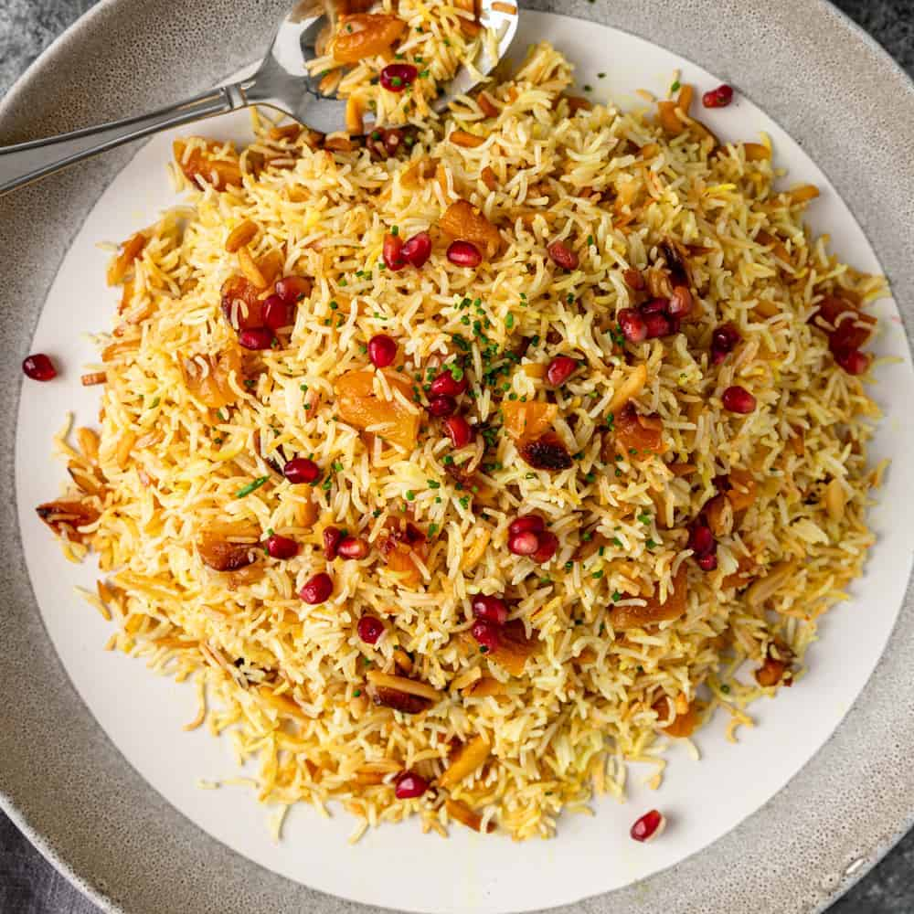

Persian Rice Recipe

Description
This recipe describes the ingredients and instructions required to cook Golden Butter Rice
Ingredients
- 3 tablespoons kosher salt
- 2 cups basmati rice, rinsed
- 2 tablespoons olive oil
- 1 russet potato, cut into 1/4-inch slices
- 1 pinch ground cumin
- salt to taste
- 3 tablespoons butter, cut into thin slices, or to taste
- 1 pinch saffron threads
- 1 ½ tablespoons hot water
- 1 tablespoon chopped parsley, or to taste
Steps
- Place water and kosher salt in a pot; bring to a boil. Add rice; cook and stir for exactly 7 minutes. Drain.
- Heat olive oil in a pot over medium-high heat. Cover the bottom of the pot with 1 layer of potato slices. Sprinkle cumin and salt over potatoes. Cook until potatoes are sizzling, 2 to 3 minutes; top potatoes with rice to form an even layer. Reduce heat to low and place butter slices over rice.
- Top the pot with a layer of clean paper towels, then place the lid over the towels. Steam until rice is fluffy, about 45 minutes.
- Grind saffron threads with a mortar and pestle. Mix crushed saffron with 1 1/2 tablespoons hot water in a large bowl. Add a couple of spoonfuls of rice to saffron mixture and stir until rice is yellow.
- Spoon remaining rice into a serving bowl. Top with saffron rice and line the edges of the bowl with potatoes. Garnish with parsley.